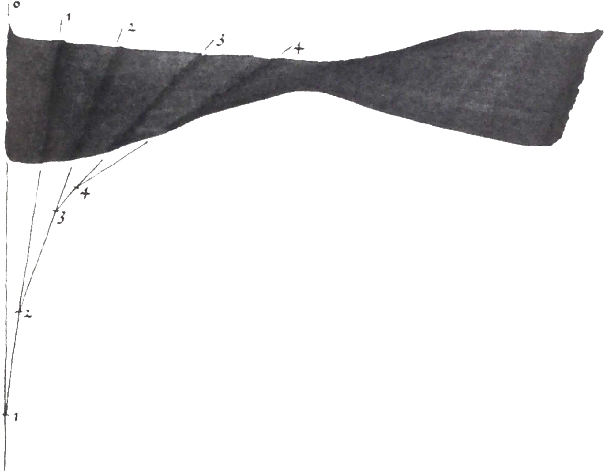
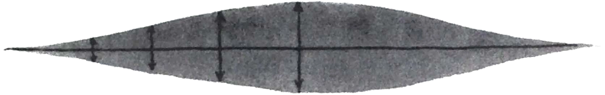
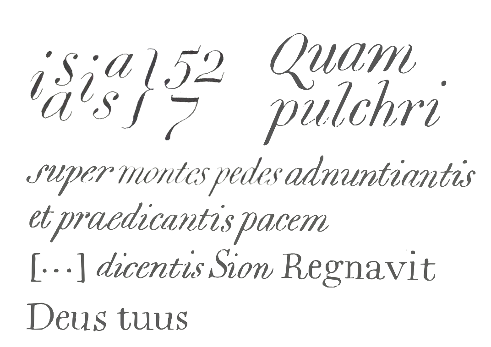
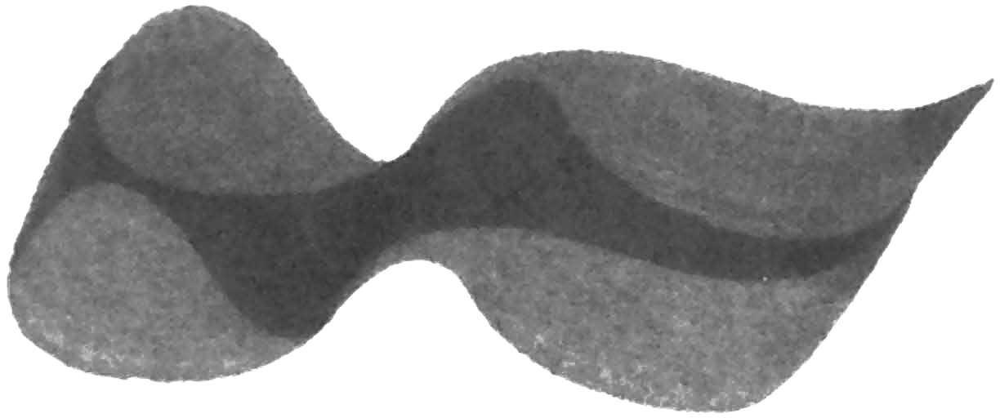

The white shapes determine the place of the black shapes, but the white shapes are made by the black shapes. The sim· plest manifestation of the black shape is the stroke. A stroke is the uninterrupted trace of an implement on the writing plane. The stroke begins with the imprint of an implement.
In figure 2.1 the imprint is an ellipse. This could be, for example, the imprint of an obliquely worn-down pencil point. As it moves forward, the impression produces the stroke. The extremities of this stroke are demi-ellipses. Only at the extremities is the identity of the imprint recognizable. Other than at the extremities, the contours of the stroke consist of straight lines. These lines are the track of a pair of points. Every point on the one contour has a counterpart on the other contour. This pair of points is the counterpoint of the stroke. The distance between the points is the size of the counterpoint.
A line runs through the counterpoint, the frontline of the stroke. The counterpoint is a line segment on the frontline. The straight stroke of figure 2.1 is simple. In every phase of the stroke the counterpoint is the same pair of points on the perimeter of the ellipse. The frontline always runs through the same axis of the ellipse and all frontlines of the stroke are parallel.
In figure 2.2 the ellipse describes a curve and now the stroke is no longer so simple. At every turn the counterpoint falls on a different axis of the ellipse so that the size of the counterpoint changes with every change in direction of the stroke. The frontlines change in orientation. Their points of intersection can fall on any point between the centre of the ellipse and infinity. This stroke is difficult to describe precisely. The stroke of a pencil is elusive.
In figure 2.3 the imprint of the implement is a triangle.The stroke is generated by a combination of three vectors each having the size and orientation of one side of the triangle. The dark track is the trace of vector 1. Whenever the lines described by the vertices of the implement intersect, a ditfferent vector becomes the counterpoint of the stroke. As a schema for a tool, the triangle is the simplest of all complications.
Figure 2.4 is the trace of one vector. The size of the counterpoint is the same throughout and its orientation is fixed. It is the schema of the simplest tool conceivable, the broadnibbed pen. The schema holds as long as the thickness of the pen is negligible in relation to the width of the pen. In the writing of small letters - and for text types in general - the limits of the scheme are evident. In many typefac es the implied vector has a deliberate thickness, and the impact ofthis thickness is readily apparent in the shape of the stroke. To complicate matters further, nowadays large type is always a linear scaling of a small body. These complications take us beyond the simple principles of this introduction and make type a topic of special consideration. For the moment I am content with representing the thickness of the imprint of the pen as a vector perpendicular to the counterpoint, whose effect is negligible in the description of basic principles.
Figure 2.5 is the schematic of a broad pen; vector a is the counterpoint (the width of the pen), vector b, perpendicular to a, is the thickness of the pen. When the counterpoint is a single vector, ofequal magnitude in every position and fixed in orientation, the differences in the width of the stroke are the consequence of changes in the direction of the stroke. Small changes in the orientation of the counterpoint (as a result of variations in the position of the pen) and changes in the size of the counterpoint (as a result of variations in pressure) will generally present themselves in the practice of writing - such deviations play a large part in the impression a piece of writing makes and they are an important factor in the analysis of individual hands, but they can only be described as deviations from the principle illustrated in figure 2.4.
The principle can be reversed, as in figure 2.6, where the thickness of the stroke drawn in one direction changes because the orientation of the counterpoint changes relative to the direction of the stroke. The frontlines intersect. The angle that the frontline passes through is the rotation of its counterpoint. In general, the rotation can be understood as a curve whose tangents are frontlines.The limits of the curve are a point (the radius of the curve is nil; every frontline intersects every other at this point) and a straight line (the radius of the curve is infinitely large; all frontlines are parallel to the straight line). In the latter case we no longer speak of rotation but of translation: the condition of figure 2.4.

There are phenomena that we can only see with the help of an invention that makes such things available to us. If one says that we have to learn to see something, then that amounts to a reference to such an invention, or, to put it formally, to a theory. The theory creates the perceptible reality. A new theory is an invention that sets the terms by which new phenomena will be perceived. Nevertheless, not every theoretical possibility is realized in practice, because, while a theory encompasses every possibility, practice is only the ensemble of realized possibilities. To find rotation, I only have to look at the virtuoso writers who enjoyed playing tricks (because, for example, they let themselves be talked into an aesthetic bias). Dutch manneristic calligraphy (from the first half of the seventeenth century) can indeed only be adequately explained if we have learned to see rotation. To be sure, the rotations go hand in hand with a widening counterpoint (expansion), the result of variant pressure on the pen. But the writing of Jan van den Velde cannot be explained by expansion alone (i.e. as writing written with a pointed pen). I wrote figure 2.7 in the Dutch standing running hand (standing running means an upright cursive). I do not pretend to be able to outdo my virtuoso predecessors - I merely want to show that their writing is written with a rotating broad-nibbed pen. When this became clear to me I remembered the description of this technique in part 3, the 'Fondementboeck', ofJan van denVelde's Spieghelderschnjfkonste of 1Gos. I knew whole phrases by heart, but their import had escaped me for years: I needed to learn to see.
In writing, contrast is the difference between thick and thin in the strokes. There are three sorts of contrast.
Translation: the contrast of the stroke is the result of changes in the direction of the stroke alone, because the size of the counterpoint is constant and the orientation of the counterpoint is constant (figure 2.4).
Rotation: the contrast of the stroke is the result not only of changes in the direction of the stroke, but also ofchanges in the orientation of the counterpoint. The size of the counter point is constant (figure 2.6).
Expansion: the contrast of the stroke is the result of changes in the size of the counterpoint. The orientation of the counterpoint is constant (figure 2.8).
Because a person is not capable of keeping the position of his pen and the pressure of his hand constant, a type of contrast never occurs in isolation, except in theoretical models. When I say that a hand is dominated by translation, I mean exactly that: to my eyes translation is the dominating type of contrast. This does not preclude that someone else who is searching for the peculiarities of a particular writer will not be struck by the expansion present in the very same sample. My conceptual framework can be used as a blunt hatchet or a surgical knife. Yet, axe or scalpel, the system sorts. What it can provide is apparent from the following, in which I lay the model of contrast types over cultural history.
Ancient Greece does not figure in this scheme, the renaissance is absorbed into the middle ages, and romanticism encompasses the baroque and classicism. Only with further refinements do these details come to the fore, but my account of them would diverge from what cultural histories supply me with. Still, that the dominant types of contrast correlate with historical milestones is beyond doubt: let the historian explain how he or she can conceive of western civilization as being held together by anything other than western writ ing.
Figure 2.8 is a stroke with a swelling counterpoint; the type of contrast is expansion. The difference between figures 2.8 and 2.9 is the direction of the stroke. In figure 2.8 the stroke is straight; in figure 2.9 one contour of the stroke is straight. It is necessary to distinguish clearly between the direction of a stroke and the direction of a contour of the stroke: the direction of the stroke is the direction of the heartline. The heartline is the line described by the midpoint of the advancing counterpoint.
Without an unambiguous delineation of the direction of the stroke the interpretation of the stroke can go awry. For instance, figure 2.10 could be taken for a straight line with a sine curve (figure 2.11).
However, in figure 2.10, the straight segments do not fall on the same contour, and their rectilinear character is nothing more than the accidental effect of a particular expansion on a specific heartline. Figure 2.12 indicates precisely which contour is which.
In studies of the typographic letter differences like those between the letters in figure 2.13 are grossly exaggerated. In my analysis the three letters have virtually identical heartlines, an identical type of contrast, and the counterpoint follows the selfsame course. The differences in shape come from the different swell of the counterpoint only. One may make what one will of the importance of this quantitative difference but in one respect it remains trivial: differences will appear between all pen strokes, even within the same letter, for it is impossible to control completely the degree of expansion in the freehand stroke.
The frontline is a line through the counterpoint, the pair of points that trace the contours of the stroke. The orientations of the frontline and counterpoint coincide. In the thin segments of figure 2.14 the frontline has no orientation because there is no counterpoint. I could as easily say that the frontline has every orientation (the star in the middle of the stroke) because the points of the counterpoint coincide: to ascertain the orientation of a line a second point is necessary. In the thin sections the counterpoint has become an inaccessible doublet whose signal I cannot pick up with the instrument of my concepts. Anything goes and nothing goes. Pure expansion is, from my vantage point, a decadent contrast sort that removes itself from systematic description because of what happens in the thin segments. The outward reaches of my inventions come into view, and with it the end of writing. What is left over I encapsulate in a geometrical formula.
h heartline
p the changing pressure on the pen, pictured as the depth of
the stroke
phi the flexibility of the pen, pictured as the angle of a wedge
running through the keel of the stroke c counterpoint
c=p·tan(phi)
The stroke is a furrow whose depth coincides with the pressure on the wedge that cuts the furrow. The angle of the wedge represents the flexibility of the pen. A formula for the counterpoint follows from the above model.
The differences between the letters of figure 2.13 can be construed with this formula. The letters are the same in principle: the heartline does not change. The swell of the counterpoint varies with the taper phi of the wedge or the depth p of the furrow. With a gradual enlargement of phi comes a series of chilnges in shape of which the letters of figure 2.13 are merely three phases. Typographically speaking, the formu la underlines the fundamental similarity of Baskerville and Bodoni.
However, the problem surrounding figure 2.14 does not afford a solution on these terms either. For the thin lines, anything goes, p zero.
Because both the size and the orientation of the counterpoint can change, it is not possible to deduce the mode of writing from the shape of the stroke with absolute certainty. In the circular stroke of figure 2.16 the orientation of the counterpoint stays the same, while the size of the counterpoint changes. In figure 2.17 the very same shape arises from a stroke in which the orientation of the counterpoint changes and the size of the counterpoint remains the same. In the stroke shown in figure 2.18 both the size and the orientation of the counterpoint change. This theoretical model shows how the counterpoint can change without the shape of the stroke betraying the change.
In practice a round point is written with a stroke the schema ofwhich figure 2.19 makes visible. Meanwhile, figure 2.17 illustrates the rotation of the tool in engraving and stone cutting.
In figure 2.20 the counterpoints of two strokes reach across each other. A shape has arisen that does not allow any single conclusion to be made about the stroke. That is what the black shapes of drawn letters (and typefaces) are like. They can only be approached from the white of the word. Only in a metaphorical sense can we speak here of a stroke.